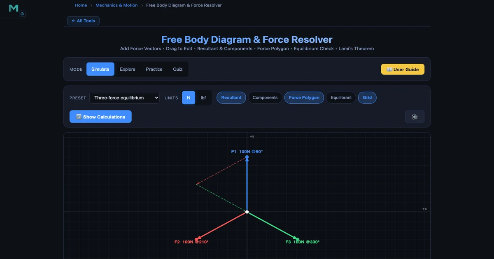
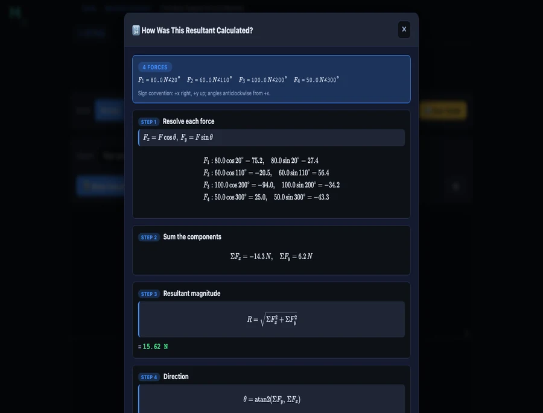

How to Draw a Polygon of Forces and Verify Equilibrium — With a Live Free Body Diagram Simulator

The polygon of forces is one of those topics that students either fully grasp in the first lesson or quietly struggle with for the rest of the semester. Draw three arrows on a diagram, connect them tip-to-tail, and either the polygon closes — meaning equilibrium — or it doesn't, meaning there's a net resultant force. Simple in principle. Not so simple on paper, where a bad protractor reading or a shaky ruler ruins the whole thing. The Free Body Diagram & Force Resolver on NHIT VisualLab lets you build a concurrent force system in seconds, toggle the force polygon on and off, read ΣFx and ΣFy live, and see the resultant update instantly as you drag any force vector. This article walks through the theory and shows exactly how to use it.
Why the Force Polygon Trips Students Up
Here is a scene that repeats every semester. We are working through a three-force equilibrium problem — a weight hanging from two angled cables. Most students can draw the free body diagram fine. The trouble starts when I ask them to verify the answer graphically using the force polygon. They reach for a ruler and protractor. Fifteen minutes later, half the class has a polygon that doesn't quite close, but they can't tell if it is because the forces genuinely don't balance or because their protractor was off by three degrees.
The deeper problem is conceptual. Students treat "drawing the polygon" as a separate skill from "calculating the resultant." They are the same thing. The polygon is just the vector addition made visible. When I show it moving live on screen — watch the triangle close the moment the third force snaps into place — the connection clicks. The diagram isn't decoration. It is the calculation.
The second sticking point is sign conventions. Angles measured anticlockwise from the +x axis feel arbitrary until students see why: it is the only convention that makes the component formulas consistent for all four quadrants. A 210° force isn't a "negative direction" force — it is a force whose cosine happens to be negative. Keep that straight and everything else follows.
The Maths Behind Force Resolution
Every force has a magnitude \(F\) and a direction \(\theta\) measured anticlockwise from the positive x-axis. To resolve it into rectangular components:
\[F_x = F \cos\theta \qquad F_y = F \sin\theta\]
For a system of \(n\) concurrent forces, sum each component separately:
\[\Sigma F_x = \sum_{i=1}^{n} F_i \cos\theta_i \qquad \Sigma F_y = \sum_{i=1}^{n} F_i \sin\theta_i\]
The resultant magnitude and direction follow from Pythagoras and the two-argument arctangent:
\[R = \sqrt{(\Sigma F_x)^2 + (\Sigma F_y)^2} \qquad \theta_R = \operatorname{atan2}(\Sigma F_y,\, \Sigma F_x)\]
Equilibrium is simply the special case where \(R = 0\), which requires both conditions to hold simultaneously:
\[\Sigma F_x = 0 \quad \text{and} \quad \Sigma F_y = 0\]
That pair of equations is the whole of particle statics. Every problem — hanging weights, pin-jointed truss joints, concurrent cable systems — reduces to applying those two equations at the right point.
What the Free Body Diagram & Force Resolver Tool Does
The tool at mechsimulator.com/tools/free-body-diagram/ is purpose-built for teaching concurrent force analysis. You add forces using the + Add Force button, type a magnitude and angle, and a coloured arrow appears immediately on the canvas. Or drag any arrowhead directly — the magnitude and angle update in the readout badges in real time. The tool works in both newtons (N) and pounds-force (lbf).
The toolbar offers four view toggles that you can switch on and off independently:
- Resultant — the white arrow showing the vector sum of all forces.
- Components — dashed lines showing the resultant split into its Rx and Ry parts.
- Force Polygon — the tip-to-tail polygon drawn through all force vectors. It closes when the system is in equilibrium.
- Equilibrant — the single force that would balance the system; equal to the resultant but pointing the opposite way.
The readout badges beneath the canvas show ΣFx, ΣFy, resultant magnitude, and direction angle. There is also a Live Equations panel with your actual numbers substituted, and Show Calculations opens a step-by-step derivation — resolve each force, sum, magnitude, direction — with every arithmetic step written out.
Four modes cover different teaching moments: Simulate for free exploration, Explore for guided concept cards on resolution and Lami's theorem, Practice for randomised problem sets, and Quiz for a graded five-question test.
Polygon of Forces — Step-by-Step Walkthrough
Load the Four concurrent forces preset from the dropdown and click Show Calculations. The tool sets up F1=80N@20°, F2=60N@110°, F3=100N@200°, F4=50N@300°. Here is what the calculation panel shows, and why each step matters.
Step 1 — Resolve each force. Apply \(F_x = F\cos\theta\), \(F_y = F\sin\theta\) to every force individually:
\[ F_1: \quad 80\cos20^{\circ} = 75.2\text{ N}, \quad 80\sin20^{\circ} = 27.4\text{ N} \]
\[ F_2: \quad 60\cos110^{\circ} = {-20.5}\text{ N}, \quad 60\sin110^{\circ} = 56.4\text{ N} \]
\[ F_3: \quad 100\cos200^{\circ} = {-94.0}\text{ N}, \quad 100\sin200^{\circ} = {-34.2}\text{ N} \]
\[ F_4: \quad 50\cos300^{\circ} = 25.0\text{ N}, \quad 50\sin300^{\circ} = {-43.3}\text{ N} \]
Step 2 — Sum the components. Add all four x-components and all four y-components separately:
\[\Sigma F_x = 75.2 + ({-20.5}) + ({-94.0}) + 25.0 = {-14.3}\text{ N}\]
\[\Sigma F_y = 27.4 + 56.4 + ({-34.2}) + ({-43.3}) = 6.2\text{ N}\]
Step 3 — Resultant magnitude.
\[R = \sqrt{(-14.3)^2 + (6.2)^2} = \sqrt{204.49 + 38.44} = \sqrt{242.93} \approx 15.6\text{ N}\]
That 15.6 N is the net unbalanced force. The polygon doesn't close — you can see the small gap in the diagram. To bring the system into equilibrium, you would need to add an equilibrant of 15.6 N at the angle opposite to the resultant direction.

Lami's Theorem — The Three-Force Shortcut
When exactly three concurrent forces are in equilibrium, there is a faster route than resolving components. Lami's theorem states:
\[\dfrac{F_1}{\sin\alpha} = \dfrac{F_2}{\sin\beta} = \dfrac{F_3}{\sin\gamma}\]
where \(\alpha\) is the angle between \(F_2\) and \(F_3\) (the angle "opposite" to \(F_1\)), \(\beta\) is the angle between \(F_1\) and \(F_3\), and \(\gamma\) is the angle between \(F_1\) and \(F_2\). Note that these are the angles measured going around the full 360° — each pair of adjacent forces spans an angle, and all three angles must sum to 360°.
The hero image above shows the classic three-force equilibrium preset: F1=100N at 90°, F2=100N at 210°, F3=100N at 330°. Each force is separated from the next by exactly 120°, so all three \(\sin\) values equal \(\sin(120°) = 0.866\). Lami's theorem gives:
\[\dfrac{100}{\sin120^{\circ}} = \dfrac{100}{\sin120^{\circ}} = \dfrac{100}{\sin120^{\circ}} = 115.5\]
The equal ratios confirm equilibrium. The force polygon — visible as the dashed equilateral triangle in the screenshot — closes perfectly, which is the graphical statement of the same fact.
A classic Lami's theorem problem: a 200 N weight hangs from a ceiling hook via two cables, one at 30° to the vertical and one at 50°. Draw the FBD — three forces act at the knot (the two cable tensions and the weight). The angles between each pair of forces work out from the cable angles. Apply Lami's theorem and both tensions drop out in two divisions. Students who learn to spot three-force equilibrium problems early save themselves a lot of algebra.
Using This in an Engineering Statics Lesson
Here is how I structure a 50-minute lesson on concurrent force systems using the simulator.
Warm-up (8 min). Load the Two forces (90°) preset. The tool shows F1=100N @0° and F2=100N @90°, resultant R=141N @45°. Ask students to predict R before they see it — most say "200N" because they add magnitudes rather than vectors. The simulator shows the right answer instantly. That mismatch between intuition and reality is exactly the hook you need.
Core concept (15 min). Switch to Simulate mode. Walk through the four steps — draw FBD, resolve components, sum, find resultant — using the Show Calculations panel as a live worked solution. Toggle Force Polygon on and off so students see the tip-to-tail construction appear and disappear. Add a fifth force that exactly cancels the resultant (the equilibrant) and watch the polygon close.
Three-force equilibrium (12 min). Load the Three-force equilibrium preset. Enable Force Polygon. The dashed triangle closes. Ask: "What does Lami's theorem say about this specific case?" Walk through the 120° angles. Then drag one force to break the symmetry — the polygon opens, and ΣFx and ΣFy jump away from zero. Students see equilibrium as a condition, not a coincidence.
Practice (15 min). Switch to Practice mode. Students solve randomised resultant problems individually — the tool shows a force system, hides the readouts, and scores the answer with a full solution if they need it. This generates ten minutes of independent work without any marking overhead.
For the theory behind how these equilibrium conditions carry through to structures, the Truss Analysis — Method of Joints guide shows exactly how ΣFx=0 and ΣFy=0 are applied joint-by-joint in a pin-jointed frame. And the Newton's Laws of Motion guide bridges from static equilibrium (a=0) to dynamic cases where the net force produces acceleration.
Try It Yourself
All tools below are free — no account, no download.
Key Takeaways
- The polygon of forces law: if forces drawn tip-to-tail form a closed polygon, the system is in equilibrium. The closing side of an open polygon is the resultant.
- Every concurrent force resolves into \(F_x = F\cos\theta\) and \(F_y = F\sin\theta\) using the anticlockwise-from-+x convention. Negative components are not errors — they point in negative x or y directions.
- Resultant magnitude: \(R = \sqrt{(\Sigma F_x)^2 + (\Sigma F_y)^2}\). Direction: \(\theta = \operatorname{atan2}(\Sigma F_y, \Sigma F_x)\). These two equations handle any number of forces in any directions.
- Equilibrium requires both \(\Sigma F_x = 0\) and \(\Sigma F_y = 0\) simultaneously. Meeting one condition but not the other means there is a net force along one axis.
- Lami's theorem is a fast shortcut for exactly three-force equilibrium: \(F_1/\sin\alpha = F_2/\sin\beta = F_3/\sin\gamma\). The angle opposite each force is the one between the other two forces, measured going all the way around.
- The equilibrant is the single force that balances the system — equal in magnitude to the resultant but 180° opposite in direction. Useful for finding the cable tension needed to hold a structure in place.
Frequently Asked Questions
What is the polygon of forces law?
The polygon of forces law states that if a system of concurrent coplanar forces is represented in magnitude and direction by the sides of a polygon drawn tip-to-tail, then the forces are in equilibrium when the polygon closes back on itself. If the polygon does not close, the closing side — drawn from the last tip back to the first tail — represents the resultant force needed to balance the system. This is a graphical extension of the parallelogram law to three or more forces.
How do you resolve a force into components?
To resolve a force F acting at angle θ (measured anticlockwise from the +x axis) into rectangular components, use Fx = F·cos(θ) for the horizontal component and Fy = F·sin(θ) for the vertical component. For example, a 100 N force at 30° gives Fx = 100·cos(30°) = 86.6 N and Fy = 100·sin(30°) = 50.0 N. Once every force in the system is resolved, sum all Fx values to get ΣFx and all Fy values to get ΣFy. The resultant magnitude is R = √(ΣFx² + ΣFy²) and its direction is θ = atan2(ΣFy, ΣFx).
What are the conditions for equilibrium of concurrent forces?
For a particle acted on by concurrent coplanar forces to be in equilibrium, two conditions must be satisfied simultaneously: the sum of all horizontal components must equal zero (ΣFx = 0) and the sum of all vertical components must equal zero (ΣFy = 0). Graphically, this means the force polygon drawn tip-to-tail closes back to the starting point. If either condition is violated, the net force produces an acceleration in that direction according to Newton's second law.
When can you use Lami's theorem?
Lami's theorem applies only to a body in equilibrium under exactly three concurrent coplanar forces. It states that each force is proportional to the sine of the angle between the other two: F1/sin(α) = F2/sin(β) = F3/sin(γ), where α is the angle between F2 and F3 (opposite to F1), β is the angle between F1 and F3 (opposite to F2), and γ is the angle between F1 and F2 (opposite to F3). A classic application is a weight suspended from two cables — you know the weight and the cable angles, and Lami's theorem lets you find both cable tensions in one step without resolving components.
What is the difference between the resultant and the equilibrant?
The resultant is the single force that has the same effect as all the given forces combined — it is the vector sum of all forces in the system. The equilibrant is the single force that would bring the system into equilibrium — it is equal in magnitude to the resultant but acts in exactly the opposite direction. If the resultant is 50 N at 40°, the equilibrant is 50 N at 220° (40° + 180°). In the Free Body Diagram & Force Resolver tool, toggling the Equilibrant button shows this balancing force as a dashed arrow on the diagram.
Force polygons get dismissed as old-fashioned graphical statics from the pre-calculator era. But there is something irreplaceable about watching a polygon close — or not close — in real time. It makes equilibrium tangible in a way that a column of numbers never quite does. The abstract condition ΣFx=0, ΣFy=0 becomes a shape that either fits together or leaves a gap.
Load the Free Body Diagram & Force Resolver, try the three-force equilibrium preset, and drag one force out of position. Watch the polygon open. That gap is your net force — and now you know exactly what direction it points and how large it is.